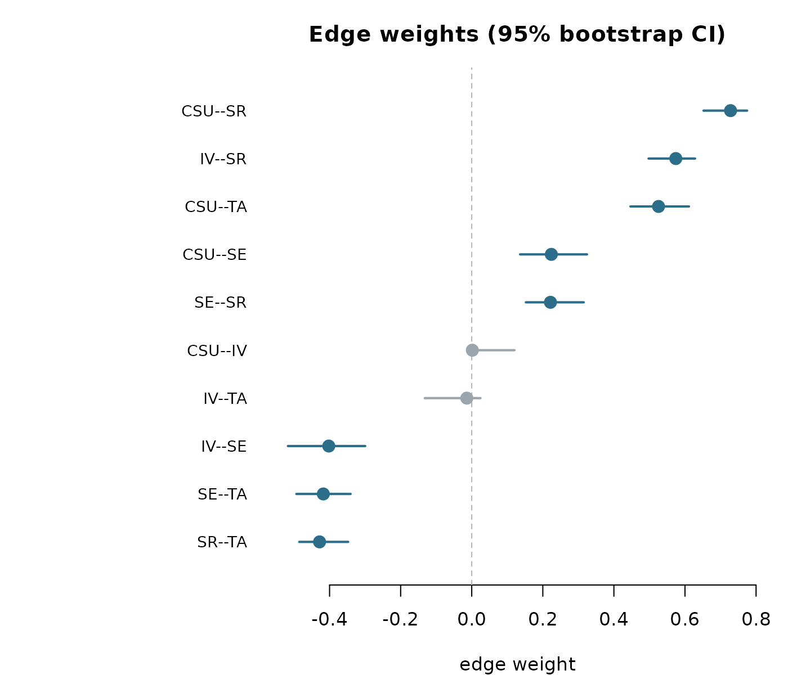
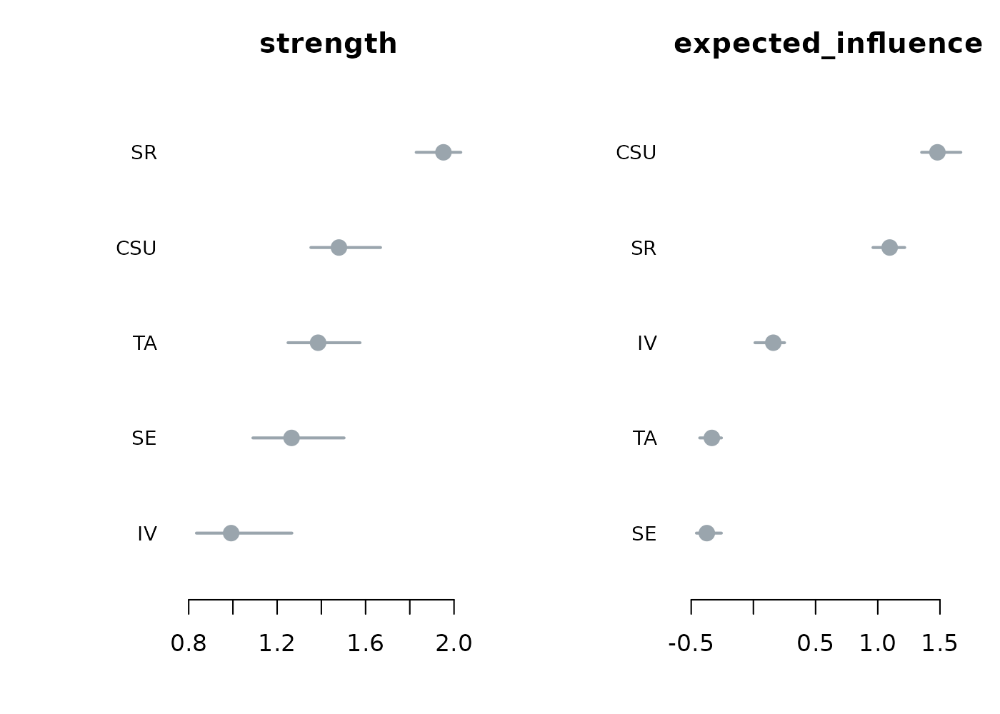
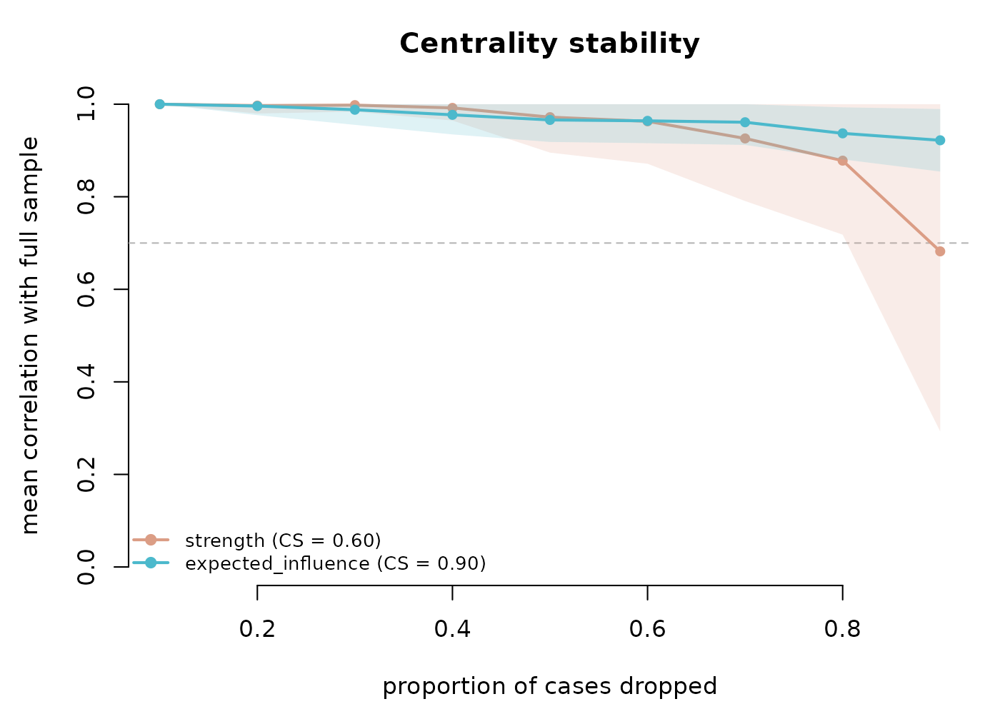

Edge-weight stability and split-half reliability
Mohammed Saqr
Source:vignettes/articles/network-reliability.Rmd
network-reliability.RmdWhat network accuracy and stability are
A psychometric network is an estimate. Every edge weight and every centrality value is computed from a finite sample, so each carries sampling variability. A network drawn from one sample would differ from a network drawn from another sample of the same population. Reliability analysis is the set of resampling diagnostics that quantify this variability and report how much of the estimated structure is reproducible.
Four questions organise the diagnostics in this vignette. How wide is
the sampling interval around each edge weight, and does that interval
exclude zero? Do the differences between edges or between centralities
survive resampling? Do the centrality rankings hold up when cases are
dropped? Does the whole edge structure reproduce across independent
halves of the sample? The verbs net_boot(),
difference_test(), net_stability(),
casedrop_reliability(), and
network_reliability() answer these in turn. Every verb is
estimator-agnostic: each routes its refits through
psychnet(method = ), so the same diagnostic applies to any
estimator in the package, and each is written in base R with no compiled
dependency.
The data
The bundled SRL_Claude data set holds 300 respondents
scored on five self-regulated-learning subscales: cognitive strategy use
(CSU), intrinsic value (IV), self-efficacy (SE), self-regulation (SR),
and test anxiety (TA).
head(SRL_Claude)
#> CSU IV SE SR TA
#> 1 4.615385 6.444444 4.555556 4.777778 4.00
#> 2 5.692308 7.000000 5.555556 6.222222 3.00
#> 3 5.692308 7.000000 5.777778 6.666667 3.75
#> 4 5.461538 6.222222 5.777778 5.777778 4.75
#> 5 4.846154 5.333333 5.000000 5.333333 3.75
#> 6 4.538462 4.333333 5.777778 4.000000 5.00Bootstrapped edge and centrality accuracy
net_boot() resamples the observations with replacement,
re-estimates the network on each resample, and summarises the sampling
distribution of every edge weight and every node centrality. For each
edge it reports the resample mean, the percentile confidence interval,
the proportion of resamples in which the edge is non-zero, and a
significant flag that is TRUE when the
interval excludes zero. The returned object has class
psychnet_bootstrap; its $edges data frame
carries the columns from, to,
observed, mean, lower,
upper, prop_nonzero, and
significant, and its $centrality data frame
carries the observed centrality of each node with a lower and upper
bound per measure.
b <- net_boot(SRL_Claude, method = "glasso", n_boot = 200, cores = 1)
b
#> <psychnet_bootstrap> glasso, 200 resamples, 95% CI
#> 10 edges (8 significant), 5 nodes, measures: strength, expected_influenceThe header reports 200 resamples, a 95% interval, and 8 of the 10 edges flagged significant. The edge table gives the accuracy interval behind each estimate.
b$edges
#> from to observed mean lower upper prop_nonzero
#> 1 CSU IV 0.001744267 0.02777141 0.0000000 0.1202986 0.550
#> 2 CSU SE 0.223973564 0.22825629 0.1360369 0.3243276 1.000
#> 3 IV SE -0.402239002 -0.40747351 -0.5171210 -0.2997294 1.000
#> 4 CSU SR 0.728177591 0.72069631 0.6520409 0.7748107 1.000
#> 5 IV SR 0.574170376 0.55984489 0.4974457 0.6284297 1.000
#> 6 SE SR 0.221496430 0.22481115 0.1522627 0.3150743 1.000
#> 7 CSU TA 0.525584044 0.52512504 0.4465139 0.6111719 1.000
#> 8 IV TA -0.013854928 -0.03375546 -0.1320652 0.0245725 0.755
#> 9 SE TA -0.417575459 -0.41986895 -0.4934429 -0.3408875 1.000
#> 10 SR TA -0.428181457 -0.42032870 -0.4852677 -0.3476119 1.000
#> significant
#> 1 FALSE
#> 2 TRUE
#> 3 TRUE
#> 4 TRUE
#> 5 TRUE
#> 6 TRUE
#> 7 TRUE
#> 8 FALSE
#> 9 TRUE
#> 10 TRUEA bootstrap confidence interval is the range of edge weights
consistent with the data at the stated level. An edge whose interval
excludes zero is a non-zero edge. The CSU–SR edge has an observed weight
of 0.73 and an interval of about 0.65 to 0.77, well clear of zero, so it
is one of the reliably non-zero edges. The CSU–IV edge has an observed
weight near 0.002 and an interval from 0 to about 0.12, which includes
zero, so its sign and presence are undetermined at this sample size; the
IV–TA edge behaves the same way. The prop_nonzero column
reads these two edges as selected in only a part of the resamples (about
0.55 and 0.76), while the eight significant edges are selected in every
resample.
The default plot draws each edge weight with its bootstrap interval, ordered by magnitude, with the significant edges marked.
plot(b)
The centrality panel does the same for the node measures.
plot(b, type = "centrality")
Within-network difference tests
difference_test() tests, inside a single network,
whether two edge weights or two node centralities differ. For each pair
it forms the per-resample difference from the stored bootstrap draws,
takes the percentile interval of that difference, and flags the pair
significant when the interval excludes zero; it also
reports the two-sided bootstrap p-value. The verb reads the draws
already stored on a net_boot() object, so no refitting
happens. It returns a tidy data frame with columns item1,
item2, value1, value2,
obs_diff, lower, upper,
p_value, and significant. This is the
within-network counterpart to the accuracy intervals of
net_boot(): it asks which nodes are ordered with
confidence.
difference_test(b, type = "strength")
#> item1 item2 value1 value2 obs_diff lower upper p_value
#> 1 CSU IV 1.4794795 0.9920086 0.48747089 0.241546367 0.66372411 0.00
#> 2 CSU SE 1.4794795 1.2652845 0.21419501 0.038286544 0.42634973 0.04
#> 3 IV SE 0.9920086 1.2652845 -0.27327588 -0.334413124 -0.13532664 0.00
#> 4 CSU SR 1.4794795 1.9520259 -0.47254639 -0.623609013 -0.21321640 0.00
#> 5 IV SR 0.9920086 1.9520259 -0.96001728 -1.093928157 -0.59055176 0.00
#> 6 SE SR 1.2652845 1.9520259 -0.68674140 -0.877109385 -0.38029431 0.00
#> 7 CSU TA 1.4794795 1.3851959 0.09428358 0.003900685 0.19887099 0.04
#> 8 IV TA 0.9920086 1.3851959 -0.39318731 -0.563676398 -0.15302913 0.00
#> 9 SE TA 1.2652845 1.3851959 -0.11991143 -0.332646886 0.08003091 0.26
#> 10 SR TA 1.9520259 1.3851959 0.56682997 0.285722615 0.69319578 0.00
#> significant
#> 1 TRUE
#> 2 TRUE
#> 3 TRUE
#> 4 TRUE
#> 5 TRUE
#> 6 TRUE
#> 7 TRUE
#> 8 TRUE
#> 9 FALSE
#> 10 TRUEA two-sided bootstrap p-value is the probability, under resampling, of a difference at least as large as the observed one when the two quantities are equal. Self-regulation (SR) has the highest observed strength at 1.95, and its difference from every other node has an interval excluding zero and a p-value of 0.00, so SR ranks above the rest with confidence. The SE–TA pair is the exception: its observed strength difference is about -0.12, its interval runs from about -0.33 to 0.08 and includes zero, and its p-value is 0.26, so the strengths of SE and TA are not distinguishable here. A ranking that separates those two nodes would not be supported by the data.
Centrality stability under case-dropping
net_stability() re-estimates the network on random
case-dropped subsets and correlates each subset’s centralities, by
Spearman rank, with the full-sample centralities. The
correlation-stability coefficient, or CS-coefficient, is the largest
proportion of cases that can be dropped while the rank correlation with
the full-sample centrality stays at or above a threshold (0.7 by
default) with a stated probability (0.95 by default). The returned
psychnet_stability object holds $cs, the
CS-coefficient per measure, and a tidy $table with columns
measure, drop_prop, mean_cor,
sd_cor, and prop_above.
st <- net_stability(SRL_Claude, method = "glasso", iter = 100)
st
#> <psychnet_stability> glasso, 100 subsets/proportion
#> CS-coefficient (cor >= 0.70 with 95% certainty):
#> strength 0.60
#> expected_influence 0.90The CS-coefficient for strength is 0.60 and for expected influence is 0.90. The interpretation of a CS-coefficient of 0.60 is that up to 60% of the cases can be dropped and the strength ranking still correlates at least 0.7 with the full-sample ranking in 95% of subsets. A common rule of thumb sets 0.25 as the minimum and 0.50 as the preferred value for a centrality ordering that can be read with confidence; both measures here sit above 0.50, and expected influence is close to the maximum. The plot draws the mean correlation against the drop proportion with a plus-or-minus one standard deviation band and the acceptance threshold.
plot(st)
Edge-weight case-dropping stability
casedrop_reliability() provides the edge-vector
complement of net_stability(). For each drop proportion it
re-estimates the network on random case-dropped subsets and compares the
subset edge-weight vector with the full-sample one, reporting the
correlation between the two vectors together with the mean, median, and
maximum absolute edge deviation. The edge-weight CS-coefficient is the
largest drop proportion at which the edge-vector correlation stays at or
above the threshold with the stated probability. The result is a tidy
data frame of class psychnet_casedrop, one row per metric
per drop proportion, with columns metric,
drop_prop, mean, and sd; the
CS-coefficient prints on the header line.
cd <- casedrop_reliability(SRL_Claude, method = "glasso", iter = 100)
cd
#> # edge-weight stability: glasso | CS = 0.90 (spearman cor >= 0.70 at 95%)
#> metric drop_prop mean sd
#> 1 mean_abs_dev 0.1 0.01226963 0.007075716
#> 2 mean_abs_dev 0.2 0.01704830 0.006629743
#> 3 mean_abs_dev 0.3 0.02273679 0.009534285
#> 4 mean_abs_dev 0.4 0.02959752 0.013174668
#> 5 mean_abs_dev 0.5 0.03467924 0.015125426
#> 6 mean_abs_dev 0.6 0.04526840 0.021560769
#> 7 mean_abs_dev 0.7 0.05571818 0.024152429
#> 8 mean_abs_dev 0.8 0.07333163 0.028301702
#> 9 mean_abs_dev 0.9 0.11152316 0.039803987
#> 10 median_abs_dev 0.1 0.01116373 0.007719947
#> 11 median_abs_dev 0.2 0.01479697 0.006925324
#> 12 median_abs_dev 0.3 0.02010077 0.010840841
#> 13 median_abs_dev 0.4 0.02713480 0.014261871
#> 14 median_abs_dev 0.5 0.03001670 0.015792390
#> 15 median_abs_dev 0.6 0.04143717 0.021706336
#> 16 median_abs_dev 0.7 0.04888534 0.025835266
#> 17 median_abs_dev 0.8 0.06553899 0.031146758
#> 18 median_abs_dev 0.9 0.10039166 0.044548360
#> 19 correlation 0.1 0.98226641 0.017514417
#> 20 correlation 0.2 0.97632517 0.018269982
#> 21 correlation 0.3 0.97262239 0.017963197
#> 22 correlation 0.4 0.97281039 0.019555878
#> 23 correlation 0.5 0.96772188 0.019468087
#> 24 correlation 0.6 0.96538481 0.020502632
#> 25 correlation 0.7 0.96110187 0.023930758
#> 26 correlation 0.8 0.95532346 0.027832925
#> 27 correlation 0.9 0.92473574 0.048136851
#> 28 max_abs_dev 0.1 0.02839632 0.014376966
#> 29 max_abs_dev 0.2 0.03951177 0.015131263
#> 30 max_abs_dev 0.3 0.05302545 0.020119455
#> 31 max_abs_dev 0.4 0.06982927 0.030388812
#> 32 max_abs_dev 0.5 0.08135286 0.033159361
#> 33 max_abs_dev 0.6 0.10021432 0.044140166
#> 34 max_abs_dev 0.7 0.12784078 0.048457205
#> 35 max_abs_dev 0.8 0.16743770 0.057784159
#> 36 max_abs_dev 0.9 0.26030328 0.093482576The edge-weight CS-coefficient is 0.90. The correlation
rows read the vector correlation directly: at a 10% drop the subset edge
vector correlates 0.98 with the full-sample vector, and even at a 90%
drop the correlation holds near 0.92, so the edge structure as a whole
is highly reproducible under case-dropping. The absolute-deviation rows
report the size of the edge shifts on the weight scale: the mean
absolute deviation grows from about 0.012 at a 10% drop to about 0.11 at
a 90% drop, and the maximum single-edge deviation from about 0.03 to
about 0.26. The four metrics plot against the drop proportion, each with
a plus-or-minus one standard deviation band; the correlation panel
carries the threshold and the CS-coefficient.
plot(cd)
Split-half reliability
network_reliability() repeatedly splits the sample into
two halves, estimates a network on each half, and compares the two
edge-weight vectors. It reports, across the splits, the edge-weight
correlation between halves together with the mean, median, and maximum
absolute edge deviation, a psychometric reliability view of the
estimated structure. The result is a tidy data frame of class
psychnet_reliability, one row per metric, with columns
metric, mean, sd,
lower, and upper, where lower and
upper are the 2.5% and 97.5% quantiles of the metric across
the split-half iterations.
rel <- network_reliability(SRL_Claude, method = "glasso", iter = 100)
rel
#> # split-half reliability: glasso | 100 iterations (50/50 split)
#> metric mean sd lower upper
#> 1 mean_abs_dev 0.06409973 0.02200678 0.03319670 0.1092927
#> 2 median_abs_dev 0.05676066 0.02299493 0.02115298 0.1086049
#> 3 correlation 0.98242243 0.01210665 0.95313106 0.9960735
#> 4 max_abs_dev 0.14187492 0.05224566 0.06749545 0.2635560The correlation between the two independent halves averages 0.982 with a 95% range from about 0.953 to 0.996 across the 100 splits. A between-halves edge correlation near 1 indicates that two disjoint samples of 150 respondents each recover almost the same edge structure. The mean absolute edge deviation averages 0.064 and the maximum single-edge deviation averages 0.142, so the typical edge shifts by well under a tenth of a unit between halves while the largest shift reaches about a seventh. The plot shows the distribution of each metric across the splits with the observed mean marked.
plot(rel)
Any estimator, any grouping
Every verb in this vignette routes its refits through
psychnet(method = ), so each applies to any estimator with
no per-method code. The partial-correlation estimator gives its own
case-dropping profile, for example.
casedrop_reliability(SRL_Claude, method = "pcor", iter = 100)
#> # edge-weight stability: pcor | CS = 0.90 (spearman cor >= 0.70 at 95%)
#> metric drop_prop mean sd
#> 1 mean_abs_dev 0.1 0.01407596 0.005722099
#> 2 mean_abs_dev 0.2 0.02103369 0.008735917
#> 3 mean_abs_dev 0.3 0.03135441 0.013653667
#> 4 mean_abs_dev 0.4 0.03533740 0.015310550
#> 5 mean_abs_dev 0.5 0.04366644 0.019115731
#> 6 mean_abs_dev 0.6 0.05544954 0.022945464
#> 7 mean_abs_dev 0.7 0.06709600 0.027703213
#> 8 mean_abs_dev 0.8 0.08590790 0.034829376
#> 9 mean_abs_dev 0.9 0.13930127 0.050714693
#> 10 median_abs_dev 0.1 0.01255458 0.005728588
#> 11 median_abs_dev 0.2 0.01868817 0.009034031
#> 12 median_abs_dev 0.3 0.02904228 0.014722232
#> 13 median_abs_dev 0.4 0.03149873 0.015085832
#> 14 median_abs_dev 0.5 0.03877024 0.019599609
#> 15 median_abs_dev 0.6 0.05061707 0.025013217
#> 16 median_abs_dev 0.7 0.06252573 0.027848899
#> 17 median_abs_dev 0.8 0.07818641 0.038656186
#> 18 median_abs_dev 0.9 0.12953302 0.052834482
#> 19 correlation 0.1 0.98884848 0.010852487
#> 20 correlation 0.2 0.98278788 0.016086141
#> 21 correlation 0.3 0.97345455 0.021078859
#> 22 correlation 0.4 0.97636364 0.018665140
#> 23 correlation 0.5 0.96945455 0.022295896
#> 24 correlation 0.6 0.96121212 0.025437340
#> 25 correlation 0.7 0.96000000 0.027592251
#> 26 correlation 0.8 0.94654545 0.035604566
#> 27 correlation 0.9 0.90787879 0.056486893
#> 28 max_abs_dev 0.1 0.03107886 0.012465500
#> 29 max_abs_dev 0.2 0.04640442 0.017538560
#> 30 max_abs_dev 0.3 0.06831509 0.029755783
#> 31 max_abs_dev 0.4 0.07758760 0.031489940
#> 32 max_abs_dev 0.5 0.09775775 0.041505461
#> 33 max_abs_dev 0.6 0.12091082 0.046760671
#> 34 max_abs_dev 0.7 0.14489778 0.060423740
#> 35 max_abs_dev 0.8 0.19218553 0.071761675
#> 36 max_abs_dev 0.9 0.29803031 0.104489216Each verb also accepts a psychnet_group object, built
with psychnet(..., group = ), and returns one result per
group level.
Summary
| Verb | Question it answers | Returns |
|---|---|---|
net_boot() |
How wide is the accuracy interval around each edge and centrality? |
psychnet_bootstrap with tidy $edges and
$centrality
|
difference_test() |
Do two edges or two centralities differ within the network? | tidy df (item1, item2, interval,
p_value, significant) |
net_stability() |
How robust is the centrality ranking to dropping cases? |
psychnet_stability with $cs and
$table
|
casedrop_reliability() |
How robust is the edge structure to dropping cases? | tidy df (metric by drop proportion) with the edge-weight CS |
network_reliability() |
How reproducible is the edge structure across split-halves? | tidy df, one row per between-halves metric |
Together these verbs cover edge accuracy, within-network ordering, centrality stability, edge-weight stability, and split-half reliability in base R.